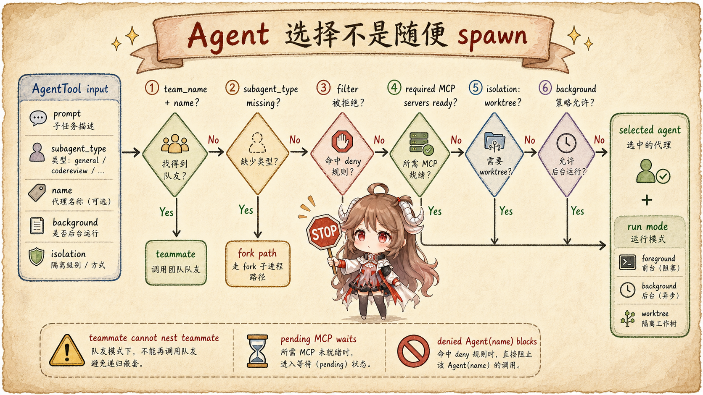
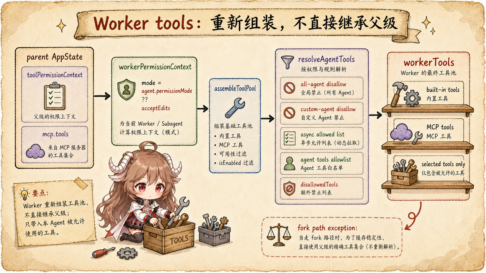
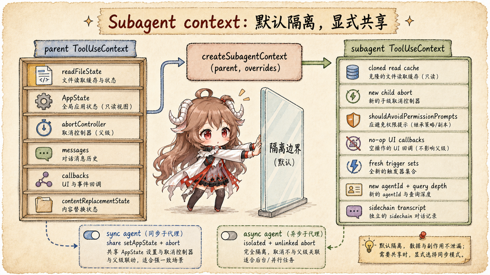

上一篇把能力入口拆成 slash command、SkillTool 和 MCP。
这一篇看另一个更高层的能力入口：AgentTool。它不是直接执行一个本地动作，
而是启动一个新的 agent 循环，让这个 agent 带着自己的提示词和工具池去完成子任务。
先说结论：Claude Code 的 subagent 是“隔离上下文 + 独立 query loop”，不是父会话里的普通函数调用。 普通 subagent 会重新选择 agent definition、重建 worker tool pool；fork path 则反过来， 故意复用父级 system prompt、tools、thinking config 和 messages prefix，只在尾部加 fork 指令， 目的就是最大化 prompt cache 命中。
主线可以压成一句话：模型发起 Agent tool_use 后，AgentTool.call()
先决定是 teammate、普通 subagent 还是 fork path；普通 subagent 用 assembleToolPool()
和 resolveAgentTools() 生成 worker tools；runAgent() 再创建
createSubagentContext()，执行独立 query() 循环，并把消息写入 sidechain transcript。
阅读契约：这篇只追本地 in-process subagent 和 fork path： Agent 怎么被选中，工具池怎么被收窄，fork 为什么要复用父级前缀， subagent context 默认隔离了哪些状态，同步和异步 agent 为什么有不同生命周期。 远端 CCR、tmux teammate 和 swarm 只在必要处点到为止。
产品层证据来自 Claude Code 的 sub-agents 文档、 hooks 文档； 源码层来自 Rememorio/claude-code 公开镜像。 本文只描述客户端代码能证明的路径，不从客户端代码推断服务端调度策略。
一、AgentTool 的输入不是“开新会话”
AgentTool 的 schema 在
AgentTool.tsx。
基础输入有 description、prompt、可选 subagent_type、可选模型和后台运行标记；
feature gate 打开时，还可能有 name、team_name、mode、
isolation 和 cwd。这些字段决定的是执行形态，不是简单的聊天窗口参数。

AgentTool.call() 先过选择闸门：能不能 spawn、选哪个 agent、MCP 是否就绪、是否需要隔离工作树。1.1 先分 teammate、fork 和普通 agent
AgentTool.call()
先读取 app state 和 permission mode，再处理几条分流。
如果 team_name + name 成立，它会走 teammate spawn；
如果 subagent_type 为空且 fork feature 打开，它会走 fork path；
否则才从 agentDefinitions.activeAgents 里找指定 agent。
选择 agent 前还会过滤 deny rule。源码里支持 Agent(name) 这类权限规则：
如果某个 agent 被 deny，调用会直接抛出错误，而不是让模型绕过去。
这和前面的权限篇能接上：subagent 的生成本身也是一个需要治理的能力。
1.2 required MCP 是启动前置条件
agent definition 可以声明 required MCP servers。
源码会先检查这些 server 是否已经有 tools。
如果所需 server 还在 pending，它会最多等待一段时间；如果失败或没有对应工具，就返回错误并提示通过 /mcp 配置或认证。
这说明 agent 不是“启动后再慢慢发现能力”。有些 agent 的能力边界必须在启动前满足，否则系统提示词、工具池和任务预期都会不一致。
二、普通 subagent 会重建 worker tool pool
普通 subagent 的关键不是复制父级工具，而是重建一份 worker 工具池。
这段代码
先从父级 app state 拿 toolPermissionContext 和 mcp.tools，
再把 mode 改成 selectedAgent.permissionMode ?? "acceptEdits"，
最后调用 assembleToolPool()。

2.1 resolveAgentTools() 是工具收窄器
工具收窄的共享逻辑在
resolveAgentTools()。
它会先调用 filterToolsForAgent()，过滤所有 agent 都不能用的工具、自定义 agent 不能用的工具、
async agent 不能用的工具；然后再处理 agent definition 里的 tools 和
disallowedTools。
有个细节很重要：MCP tools 默认允许给所有 agent；但非主线程的 Agent tool 会被过滤掉， 防止 subagent 无限套娃。主线程例外，因为主线程工具池已经在 REPL 侧按当前 agent 限制过。
2.2 普通 agent 有自己的系统提示词
非 fork path 会调用 selected agent 的 getSystemPrompt()，
再用
getAgentSystemPrompt()
加上环境细节和 enabled tools。它不是把父级系统提示词原样带过去，而是按 agent definition 重新生成。
这就是普通 subagent 的语义：父 agent 只交代任务，子 agent 用自己的角色、工具和上下文执行。 它像一个小型 runtime，不是父会话里的一段 prompt 模板。
三、fork path 反过来：为了缓存，故意复制父级前缀
fork path 是另一种设计。它不急着给子 agent 新系统提示词，而是尽量复制父级请求前缀。
注释写得很明确：
fork child 继承父级 system prompt，并通过 buildForkedMessages() 克隆父级 assistant message、
placeholder tool_results 和 per-child directive。

3.1 exact tools 和 thinking config 都是 cache key 的一部分
fork path 的 runAgentParams 会设置 useExactTools: true，
并把 availableTools 设成父级 toolUseContext.options.tools。
源码注释
解释了原因：worker tools 如果用不同 permission mode 重建，工具定义序列化会变，prompt cache 就会在第一个差异处失效。
runAgent()
里也配合了这件事：fork children 继承父级 thinking config；普通 subagent 则默认禁用 thinking 来控制输出成本。
所以 fork path 是一个专门为“共享父级上下文前缀”设计的路径。
3.2 fork 不能递归 fork
fork child 为了工具定义一致，仍然保留 Agent tool。但 调用时会做递归 fork guard： 如果当前 querySource 已经是 fork agent，或者 messages 里能识别 fork child 标记，就直接拒绝再次 fork。 这避免了“为了 cache 保留工具 schema，却允许无限分叉”的矛盾。
四、createSubagentContext 默认隔离
真正把 subagent 变成独立运行单元的，是
createSubagentContext()。
它的注释非常直接：默认隔离所有 mutable state，调用者如果要共享，必须显式 opt-in。

4.1 默认不让子 agent 控制父 UI
createSubagentContext() 会克隆 readFileState，新建 nested memory / dynamic skill
trigger sets，生成新的 agentId 和 query tracking depth。
默认情况下，setAppState、setToolJSX、addNotification、
setStreamMode 这些父级 UI 或状态回调都是 no-op。
这不是保守过度，而是避免子 agent 在后台或嵌套执行时随便改父级界面。
如果是同步、交互式 subagent，调用方可以选择共享 setAppState、响应长度和 abort controller；
如果是异步后台 agent，就倾向于隔离。
4.2 无 UI 的 subagent 会避免权限弹窗
如果没有共享父级 abort controller，getAppState() 会被包装成
shouldAvoidPermissionPrompts: true。这和权限篇能对上：
无法弹窗的后台路径应该先让 hook 决策，没人能决策就 deny，而不是卡死等待用户点击。
五、runAgent 是子 agent 的小 query loop
AgentTool.call() 最后会把参数交给
runAgent()。
它不是只发一次 API 请求，而是一个 async generator：初始化上下文，执行 hooks，预加载 skills，接上 agent-specific MCP，
然后进入 query() 循环，把子 agent 的消息逐条 yield 回父级。
5.1 SubagentStart、frontmatter hooks 和 skills 都在 agent 内部展开
启动阶段
会执行 SubagentStart hooks，把额外上下文作为 attachment message 放进 initial messages；
如果 agent frontmatter 有 hooks，会注册到该 agent lifecycle，并把 Stop 转成 SubagentStop；
如果有预加载 skills，则把 skill content 作为 meta user message 加进去。
这说明 agent 的上下文不是只由父级 prompt 决定。agent definition 自己可以带 hooks、skills、MCP 需求和系统提示词。 这些都在进入 query loop 前变成子 agent 的 model-visible view。
5.2 Sidechain transcript 是子 agent 可恢复的前提
runAgent()
会把 initial messages 写入 sidechain transcript，然后在 query loop 中继续记录 assistant、user、progress
和 compact boundary。这个 sidechain 不是 UI 装饰，而是后面查看、恢复和统计 subagent 的基础。
同步 agent 的进度会以 agent_progress 形式回到父级；异步 agent 则注册 background task，
完成后通过 notification / task result 回到主循环。两者都不是“父级继续偷偷执行一段代码”，而是有自己的 agentId、
transcript 和清理流程。
六、同步、异步、fork 三条路径怎么记
| 路径 | 系统提示词 | 工具池 | 状态关系 |
|---|---|---|---|
| 普通同步 subagent | 按 selected agent 生成。 | worker permission context + resolveAgentTools。 | 可共享 setAppState、abort 和响应指标，进度回到父级。 |
| 普通异步 subagent | 按 selected agent 生成。 | async allowed list 继续收窄。 | 后台 task，abort controller 不跟父级 ESC 绑定，完成后通知。 |
| fork child | 继承父级 rendered system prompt。 | exact parent tools，避免工具定义变化。 | 复制父级 cache-safe 前缀，在尾部追加 fork directive。 |
| worktree isolation | 按路径覆盖后的上下文生成或追加 notice。 | 仍走 agent tool 规则。 | 在独立工作树里执行，结束后按是否有变更决定清理。 |
到这里，Claude Code 的 subagent 就不神秘了：它不是“另一个聊天窗口”，也不是“模型自己复制自己”。 它是一套可组合的上下文投影：选择一个 agent，决定普通还是 fork，组装工具池，隔离 mutable state， 跑独立 query loop，最后把结果、进度或通知回填给父级。
下一篇读 hooks 时，会继续沿着这个边界看： SessionStart、PreToolUse、PostToolUse、SubagentStart、SubagentStop 这些生命周期插槽， 究竟能在哪些地方改变上下文，又不能越过哪些运行时边界。
参考源码与文档
- Rememorio/claude-code 公开镜像
- Claude Code sub-agents 文档
- Claude Code hooks 文档
- AgentTool.tsx：input and output schema
- AgentTool.tsx：selection and fork routing
- AgentTool.tsx：required MCP servers
- AgentTool.tsx：normal and fork runAgent params
- AgentTool.tsx：async agent launch
- agentToolUtils.ts：resolveAgentTools
- forkedAgent.ts：createSubagentContext
- forkedAgent.ts：runForkedAgent
- runAgent.ts：agent-specific MCP servers
- runAgent.ts：hooks, skills, MCP and subagent context
- runAgent.ts：query loop, transcript and cleanup